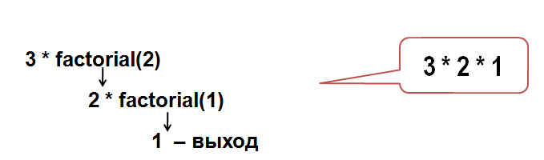

Если в теле функции встречается вызов самой этой функции, то это и есть рекурсия.
Рекурсивностью в Паскале могут обладать как функции, так и процедуры.
По сути, рекурсия может быть бесконечной. Но, как и любой другой алгоритм, она обязана выдавать результат своей работы за некое определенное количество операций.
Рассмотрим простой пример использования рекурсивной процедуры:
Например:
row (5) = 5 4 3 2 1Из условия задачи ясно, что условием завершения рекурсии будет сам аргумент функции, который следует уменьшать на единицу, пока он
>=
1.procedure row(n:integer);
begin
if n >=1 then begin
write (n, ' ');
row(n-1)
end;
end;
begin
row(10);
end.
Теперь рассмотрим более сложный пример использования рекурсии в Паскаль.
Например: при переданном функции числе 3078,
должно в итоге вернуть 8703
Использовать операции div
и mod.
procedure reverse (n: integer);
begin
write (n mod 10);
if (n div 10) <> 0 then
reverse(n div 10)
end;
begin
writeln;
reverse(3078);
end.
25,23,21,19,17… 0А теперь посмотрим, как используется рекурсия при вычислении факториала в Паскаль.
Подсказка:
2!=2*1=2
3!=3*2*1=6
Выводим формулу a!=a*((a-1)!)
d


sumTo(n),
которая для данного n вычисляет
сумму чисел от 1 до n,
например:
sumTo(1) = 1
sumTo(2) = 2 + 1 = 3
sumTo(3) = 3 + 2 + 1 = 6
...

Дополните код:
for.
Выводить каждый раз слово «привет» и
значение счетчика. Для этого использовать
переменную счетчика шагов, которую нужно
реализовать, как параметр процедуры. Второй
параметр – общее количество шагов (количество
итераций цикла).
Дополните код:
Для чисел 3430 и 1365:
| остаток от деления 3430 на 1365 | 3430 mod 1365 = 700 |
| остаток не равен нулю, повторим то же действие, подставив вместо первого числа второе, а вместо второго – остаток | 1365 mod 700 = 665 |
| остаток также не нуль, поэтому еще одно деление | 700 mod 665 = 35 |
| остаток также не нуль, поэтому еще одно деление | 665 mod 35 = 0 |
| остаток нуль | НОД равен 35 |
Результат должен быть:
1
2 3 5 8 13 21 34 55 89Дополните код: